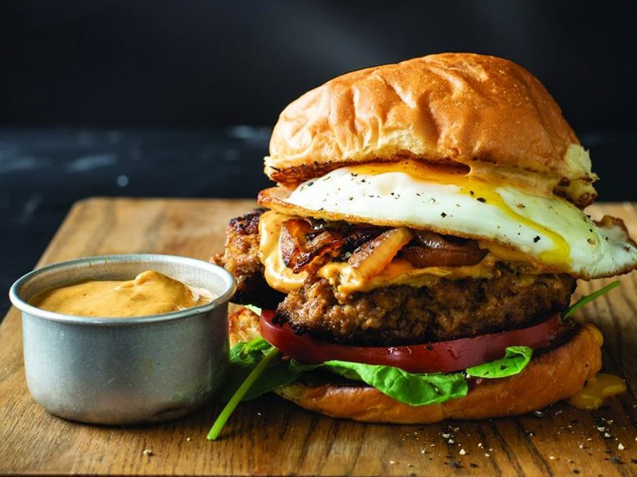

VS Burger

Description: Step into the coding arena with the "VS Burger," a tongue-in-cheek recipe that pits flavors against each other in a delicious battle of taste.
Ingredients:
- 1 coding bun (sesame-seeded)
- 1 debugging beef patty (or byte-sized veggie patty)
- 2 slices of version control cheese
- 1 cup of syntax salad greens
- 2 pickled IDE slices
- Special Sauce: a blend of mayo, mustard, and code comments
- Salt and pepper to calibrate taste
Instructions:
- Preheat your "Grill Compiler" to medium heat.
- Cook debugging beef patty or byte-sized veggie patty until juicy and perfectly "compiled."
- Layer version control cheese on top of the patty for a "merge" of flavors.
- In a mixing "Branch Bowl," toss syntax salad greens with a pinch of salt and pepper.
- Assemble: On the coding bun, place the cooked patty with cheese.
- Top with a generous portion of syntax salad.
- Lay on the pickled IDE slices for that zesty "debugging" twist.
- Drizzle the Special Sauce on top for a burst of coding camaraderie.
- Close the burger with the other half of the coding bun.
- Grill in your "Grill Compiler" for a minute to meld flavors.
- Let the "VS Burger" rest briefly to optimize the experience.
Sink your teeth into the rivalry of flavors and dive into coding bliss with the "VS Burger" – a delightful culinary creation that's as satisfying as debugging a tricky code snippet.